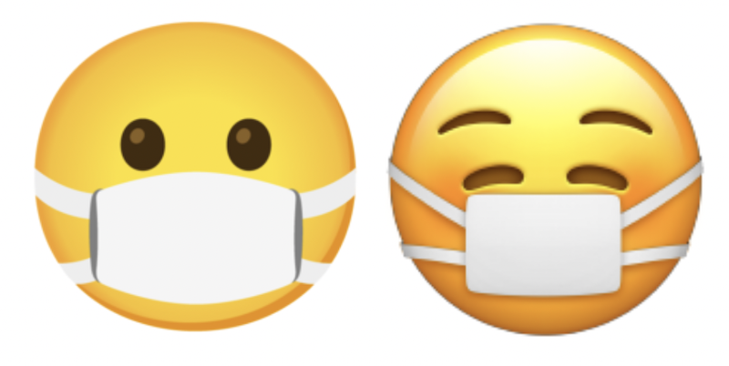
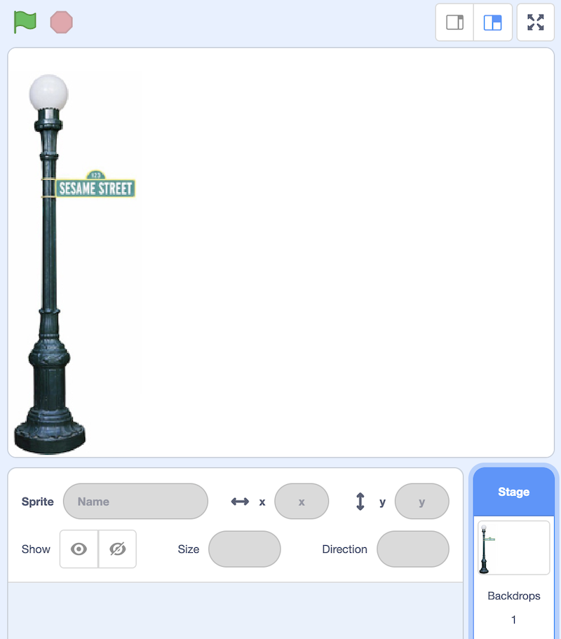

Lecture 0
- Welcome
- What is computer science?
- Representing numbers
- Text
- Images, video, sounds
- Algorithms
- Pseudocode
- Scratch basics
- Abstraction
- Conditionals and more
- Demos
Welcome
- This year, we’re back in Sanders Theatre, and David took CS50 himself as a sophomore years ago, but only because the professor at the time allowed him to take the course pass/fail.
- It turns out that computer science was less about programming than about problem solving. And though there may be frustration from feeling stuck or making mistakes, there will also be a great sense of gratification and pride from getting something to work or completing some task.
- In fact, David lost two points on his first assignment for not following all of the instructions correctly:

- And while this code (written in a programming language as opposed to a language like English) looks cryptic at first, it may only take weeks or months before we can understand main programming concepts and even teach ourselves new languages.
- Importantly,
what ultimately matters in this course is not so much where you end up relative to your classmates but where you end up relative to yourself when you began
- In fact, two-thirds of CS50 students have never taken a computer science course before.
What is computer science?
- Computer science is fundamentally problem solving, but we’ll need to be precise and methodical.
- We can think of problem solving as the process of taking some input (a problem we want to solve) and generate some output (the solution to our problem).

- To begin doing that, we’ll need a way to represent inputs and outputs, so we can store and work with information in a standardized way.
Representing numbers
- To count the number of people in a room, we might start by using our fingers, one at a time. This system is called unary, where each digit represents a single value of one.
- To count to higher numbers, we might use ten digits, 0 through 9, with a system called decimal.
- Computers use a simpler system called binary, with just two digits, 0 and 1.
- For example, in binary this would be 0:
0 0 0
- And this would be 1:
0 0 1
- (We don’t need the leading zeroes, but we’ll include them to see the patterns more easily.)
- Since there is no digit for 2, we’ll need to change another digit to represent the next number:
0 1 0
- Then we’ll “add 1” to represent 3:
0 1 1
- And continue the pattern for 4 …:
1 0 0
- … 5 …:
1 0 1
- … 6 …:
1 1 0
- … and 7:
1 1 1
- Each binary digit is also called a bit.
- Since computers run on electricity, which can be turned on or off, we can simply represent a bit by turning some switch on or off to represent a 0 or 1.
- Inside modern computers, there are billions of tiny switches called transistors that can be turned on and off to represent different values.
- And the pattern to count in binary with multiple bits is the same as the pattern in decimal with multiple digits.
- For example, we know the following number in decimal represents one hundred and twenty-three.
1 2 3
- The
3is in the ones place, the2is in the tens place, and the1is in the hundreds place. - So
123is100×1 + 10×2 + 1×3 = 100 + 20 + 3 = 123. - Each place for a digit represents a power of ten, since there are ten possible digits for each place. The rightmost place is for 100, the middle one 101, and the leftmost place 102:
102 101 100 1 2 3
- The
- In binary, with just two digits, we have powers of two for each place value:
22 21 20 # # #
- This is equivalent to:
4 2 1 # # #
- This is equivalent to:
- With all the light bulbs or switches off, we would still have a value of 0:
4 2 1 0 0 0
- Now if we change the binary value to, say,
0 1 1, the decimal value would be 3, since we add the 2 and the 1:4 2 1 0 1 1
- To count higher than 7, we would need another bit to the left to represent the number 8.
- Most computers use 8 bits at a time, like
00000011for the number 3.
Text
- To represent letters, all we need to do is decide how numbers map to letters. Some humans, many years ago, collectively decided on a standard mapping of numbers to letters. The letter “A”, for example, is the number 65, and “B” is 66, and so on. In binary, the letter “A” is the pattern
01000001. By using context, like the file format, different programs can interpret and display the same bits as numbers or text. - The standard mapping, ASCII, also includes lowercase letters and punctuation.
- When we receive a text message, we might be getting patterns of bits that have the decimal values
72,73, and33. Those bits would map to the lettersHI!. And the sequences of bits we receive would look like01001000,01001001, and00100001, with 8 bits for each character. - With eight bits, or one byte, we can have 28, or 256 different values (including zero). (The highest value we can count up to would be 255.)
- And we might already be familiar with using bytes as a unit of measurement for data, as in megabytes or gigabytes, for millions or billions of bytes.
- Other characters, such as letters with accent marks and symbols in other languages, are part of a standard called Unicode, which uses more bits than ASCII to accommodate all these characters.
- When we receive an emoji, our computer is actually just receiving a number in binary that it then maps to the image of the emoji based on the Unicode standard.
- For example, the “face with medical mask” emoji is just the four bytes
11110000 10011111 10011000 10110111:
 - And it turns out that different companies that create software for their devices will have slightly different images that represent each emoji, since only the descriptions have been standardized.
- For example, the “face with medical mask” emoji is just the four bytes
Images, video, sounds
- With bits, we can map numbers to colors as well. There are many different systems to represent colors, but a common one is RGB, which represents colors by indicating the amount of red, green, and blue within each color.
- For example, our pattern of bits earlier,
72,73, and33might indicate the amount of red, green, and blue in a color. (And our programs would know those bits map to a color if we opened an image file, as opposed to receiving them in a text message.)- Each number might be 8 bits, with 256 possible values, so with three bytes, or 24 bits, we can represent millions of colors. Our three bytes from above would represent a dark shade of yellow:

- Each number might be 8 bits, with 256 possible values, so with three bytes, or 24 bits, we can represent millions of colors. Our three bytes from above would represent a dark shade of yellow:
- The dots, or squares, on our screens are called pixels, and images are made up of many thousands or millions of those pixels as well. So by using three bytes to represent the color for each pixel, we can create images. We can see pixels in an emoji if we zoom in, for example:

- Videos are sequences of many images, changing multiple times a second to give us the appearance of motion, as a flipbook might.
- Music can be represented with bits, too. MIDI is one such format which represents music with numbers for each of the notes and their duration and volume.
- So all of these ideas are just zeroes and ones, interpreted and used by software we’ve written to interpret them in the ways that we want.
- There are other formats, some of which use compression (mathematical ways to represent some data with fewer bits), or some which might be containers that store multiple types of data together.
- And since there are many companies and groups developing software, we have lots of different file formats in existence, each with their own ways of representing data. But there are also organizations that work on some consensus, like the one responsible for maintaining the Unicode standard.
Algorithms
- Now that we can represent inputs and outputs, we can work on problem solving. The black box that transforms inputs to outputs contains algorithms, step-by-step instructions for solving problems:

- We might have an application on our phones that store our contacts, with their names and phone numbers sorted alphabetically. The old-school equivalent might be a phone book, a printed copy of names and phone numbers.
- We might open the book and start from the first page, looking for a name one page at a time. This algorithm would be correct, since we will eventually find the name if it’s in the book.
- We might flip through the book two pages at a time, but this algorithm will not be correct since we might skip the page with our name on it.
- Another algorithm would be opening the phone book to the middle, decide whether our name will be in the left half or right half of the book (because the book is alphabetized), and reduce the size of our problem by half. We can repeat this until we find our name, dividing the problem in half each time.
- We can visualize the efficiency of each of those algorithms with a chart:

- Our first algorithm, searching one page at a time, can be represented by the red line: our time to solve increases linearly as the size of the problem increases. n is a number representing the size of the problem, so with n pages in our phone books, we have to take up to n steps to find a name.
- The second algorithm, searching two pages at a time, can be represented by the yellow line: our slope is less steep, but still linear. Now, we only need (roughly) n / 2 steps, since we flip two pages at a time.
- Our final algorithm, dividing the phone book in half each time, can be represented by the green line, with a fundamentally different relationship between the size of the problem and the time to solve it. If the phone book doubled in size from 1000 to 2000 pages, we would only need one more step to find our name.
Pseudocode
- We can write pseudocode, which is a representation of our algorithm in precise English (or some other human language):
1 Pick up phone book 2 Open to middle of phone book 3 Look at page 4 If person is on page 5 Call person 6 Else if person is earlier in book 7 Open to middle of left half of book 8 Go back to line 3 9 Else if person is later in book 10 Open to middle of right half of book 11 Go back to line 3 12 Else 13 Quit
- With these steps, we check the middle page, decide what to do, and repeat. If the person isn’t on the page, and there’s no more pages in the book left, then we stop. And that final case is particularly important to remember. When programs or code don’t include that final case, they might appear to freeze or stop responding, or continue to repeat the same work over and over without making any progress.
- Some of these lines start with actions or verbs that solve a smaller problem. We’ll start calling these functions:
1 Pick up phone book 2 Open to middle of phone book 3 Look at page 4 If person is on page 5 Call person 6 Else if person is earlier in book 7 Open to middle of left half of book 8 Go back to line 3 9 Else if person is later in book 10 Open to middle of right half of book 11 Go back to line 3 12 Else 13 Quit
- We also have branches that lead to different paths, like forks in the road, which we’ll call conditionals:
1 Pick up phone book 2 Open to middle of phone book 3 Look at page 4 If person is on page 5 Call person 6 Else if person is earlier in book 7 Open to middle of left half of book 8 Go back to line 3 9 Else if person is later in book 10 Open to middle of right half of book 11 Go back to line 3 12 Else 13 Quit
- And the questions that decide where we go are called Boolean expressions, which eventually result in answers of yes or no, or true or false:
1 Pick up phone book 2 Open to middle of phone book 3 Look at page 4 If person is on page 5 Call person 6 Else if person is earlier in book 7 Open to middle of left half of book 8 Go back to line 3 9 Else if person is later in book 10 Open to middle of right half of book 11 Go back to line 3 12 Else 13 Quit
- Lastly, we have words that create cycles, where we can repeat parts of our program, called loops:
1 Pick up phone book 2 Open to middle of phone book 3 Look at page 4 If person is on page 5 Call person 6 Else if person is earlier in book 7 Open to middle of left half of book 8 Go back to line 3 9 Else if person is later in book 10 Open to middle of right half of book 11 Go back to line 3 12 Else 13 Quit
- We’ll soon encounter other ideas, too:
- functions
- arguments, return values
- conditionals
- Boolean expressions
- loops
- variables
- …
- functions
- And David’s first program just printed “hello, world” to the screen:
#include <stdio.h> int main(void) { printf("hello, world\n"); }- But this program, written in a language called C, has lots of other syntax that keeps us from focusing on these core ideas.
Scratch basics
- We’ll start programming with a graphical programming language called Scratch, where we’ll drag and drop blocks that contain instructions.
- The programming environment for Scratch is a little more friendly:

- On the left, we have puzzle pieces that represent functions or variables, or other concepts, that we can drag and drop into the big area in the center.
- On the bottom right, we can add more characters, or sprites, for our program to use.
- On the top right, we have a stage, or the world that will be shown by our program.
- The world in Scratch has a coordinate-based system for positioning things on the screen:

- The center of the screen is a coordinate of 0 for x and 0 for y, and the top of screen would be 0 for x and 180 for y. The bottom of the screen would still be 0 for x, and -180 for y. The left of the screen would be -240 for x and 0 for y, and the right of the screen would be 240 for x and 0 for y.
- Scratch also categorizes its pieces, each of which might be a function, conditional, or more:
- The “Motion” category has functions like the “move” block that will do something:
move () steps - In the “Events” category, we can see blocks that will activate when something happens, like when the green flag on top of the stage is clicked:
when green flag clicked - “Control” has conditionals, each of which will only do something if the Boolean expression inside is true:
if <> then - “Sensing” includes those Boolean expressions, or questions like whether the sprite is touching the mouse pointer:
<touching (mouse-pointer v) ?> - “Operators” contains blocks that let us do math or pick random numbers, or combine multiple Boolean expressions:
<> and <> - “Variables” will let us store values like words or numbers, and save them with names like
x,y, or other full words to describe them. - We can even combine multiple blocks ourselves into a new puzzle piece, or function, with “My Blocks”.
- The “Motion” category has functions like the “move” block that will do something:
- We can drag a few blocks to make our cat say “hello, world”:
when green flag clicked say [hello, world]- The purple block, “say”, is a function that takes some sort of input, the text in the white oval, and makes our cat say it on the stage as its output.
- We can also drag in the “ask and wait” block, with a question like “What’s your name?”, and combine it with a “say” block for the answer:
when green flag clicked ask [What's your name?] and wait say [hello,] say (answer)- The “answer” block is a variable, or value, that stores what the program’s user types in, and we can place it in a “say” block by draggind and dropping as well.
- The “ask and wait” block takes in a question as its input (or argument), and stores its return value into the “answer” block as output.
- But we didn’t wait after we said “Hello” with the first block, so we didn’t see the first message of “hello” before it was covered by our name. We can use the “join” block to combine two phrases so our cat can say “hello, David”:
when green flag clicked ask [What's your name?] and wait say (join [hello,] (answer))- Note that the “join” block takes not just one, but two arguments, or inputs, and its output, or the combined phrase, is used immediately as the input to another function, the “say” block:

- Note that the “join” block takes not just one, but two arguments, or inputs, and its output, or the combined phrase, is used immediately as the input to another function, the “say” block:
- At the bottom left of the screen, we see an icon for extensions, and one of them is called Text to Speech. After we add it, we can use the “speak” block to hear our cat speak:
when green flag clicked ask [What's your name?] and wait speak (join [hello,] (answer))- The Text to Speech extension, thanks to the cloud, or computer servers on the internet, is converting our text to audio.
Abstraction
- We can try to make the cat say meow:
when green flag clicked play sound (Meow v) until done wait (1) seconds play sound (Meow v) until done wait (1) seconds play sound (Meow v) until done- We can have it say meow three times, but now we’re repeating blocks over and over.
- Let’s use a loop, or a “repeat” block:
when green flag clicked repeat (3) play sound (Meow v) until done wait (1) seconds- Now our program achieves the same results, but with fewer blocks. We can consider it to have a better design: if there’s something we wanted to change, we would only need to change it in one place instead of three.
- We can use the idea of abstraction, or combining several ideas (or puzzle pieces) into one, so we can use and think about them more easily. We’ll go into the “My Blocks” category, and click “Make a Block”, and call it “meow”:
define meow play sound (Meow v) until done wait (1) seconds when green flag clicked repeat (3) meow- Now, our main set of blocks can just use the custom “meow” block, and we’ll be able to read this code later and understand what it does more easily.
- We could even drag the set of blocks with “define meow” to the bottom of the screen so it’s not visible, and this will still work, even if we don’t know the implementation details, or exactly how our custom block works.
- We can change the “meow” block to take an input, so it can repeat any number of times:
define meow [n] times repeat (n) play sound (Meow v) until done wait (1) seconds when green flag clicked meow [3] times- Now, our “meow” block achieves the same effect, but we can easily reuse it or change the number of times our cat says meow.
- A good strategy when programming is breaking down a larger problem into smaller subproblems, and solving those first.
Conditionals and more
- We’ll try to have our cat make a sound if we “pet” it with our mouse:
when green flag clicked if <touching (mouse-pointer v)?> then play sound (Meow v) until done- But this doesn’t seem to work. That’s because the cat is checking whether the mouse pointer is touching it right as the green flag is clicked, and nothing happens since we’re clicking the flag.
- We can have our cat check over and over with the “forever” block:
when green flag clicked forever if <touching (mouse-pointer v)?> then play sound (Meow v) until done - We can add another extension, “Video Sensing”:
when video motion > (50) play sound (Meow v) until done- Now, if we move in view of the camera slowly, our cat won’t make a sound, but if we move quickly, it will.
Demos
- With a volunteer from the audience, we demonstrate a whack-a-mole game.
- We also take a look at Oscartime, another game where the player drags trash into a trashcan for points.
- We’ll take a look at how we might have built this program. First, we can add an image of the lamp post as a backdrop:
 - Then, we’ll add images of trash cans, with one open and one closed:
when green flag clicked switch costume to (oscar1 v) forever if <touching (mouse-pointer v)?> then switch costume to (oscar2 v) else switch costume to (oscar1 v)- We name these costumes “oscar1” and “oscar2”, and whenever the mouse is touching it, the trash can will appear to be open.
- Then, we’ll work on a piece of falling trash:
when green flag clicked go to x: (pick random (-240) to (240)) y: (180) forever if <(distance to (floor v)) > (0)> then change y by (-3)- We move the trash sprite to a random horizontal position, and have it move downwards over and over while the distance to the floor (another sprite that’s a black line) is more than 0.
- We’ll allow dragging trash with these blocks:
when green flag clicked forever if <<mouse down?> and <touching (mouse-pointer v) ?>> then go to (mouse-pointer v)- If the mouse is down and touching the trash, then our trash will move to the mouse’s location.
- Finally, we’ll use variables to keep track of our score:
when green flag clicked forever if <touching (Oscar v) ?> then change (score) by (1) go to x: (pick random (-240) to (240)) y: (180)- Now, we have another sprite called “Oscar”, and if the trash is touching it, then it will add 1 to the “score” variable, and move back to the top at a random horizontal position so we can continue the game.
- Now, we’ll take a look at moving. Here, we have a few different scripts, one checking for whether keys are being pressed, and one for whether our sprite is touching a wall:
when green flag clicked go to x: (0) y: (0) forever listen for keyboard feel for walls define listen for keyboard if <key (up arrow v) pressed?> then change y by (1) end if <key (down arrow v) pressed?> then change y by (-1) end if <key (right arrow v) pressed?> then change x by (1) end if <key (left arrow v) pressed?> then change x by (-1) end define feel for walls if <touching (left wall v) ?> then change x by (1) end if <touching (right wall v) ?> then change x by (-1) end- Our main script, when the green flag is clicked, will move our sprite to the center of the stage at 0, 0 and then “listen for keyboard” and “feel for walls” forever.
- The custom “listen for keyboard” script has blocks that will change our sprite’s x- or y-coordinate on the stage for each of the arrow keys, moving it around.
- The “feel for walls” script will check whether the sprite is now touching a wall, and move it back if it is.
- We can make another sprite bounce back and forth, like it’s getting in our way:
when green flag clicked go to x: (0) y: (0) point in direction (90) forever if <<touching (left wall v)?> or <touching (right wall v)?>> then turn right (180) degrees end move (1) steps end- First, we’ll move the sprite to the middle and have it point 90 degrees to the right.
- Then, we’ll constantly check if it’s touching a wall and turn 180 degrees (reversing direction) if so, and move 1 step every time.
- We can have one sprite follow another:
when green flag clicked go to (random position v) forever point towards (Harvard v) move (1) steps- Our sprite will start at a random position, and move towards our “Harvard” sprite one step at a time.
- We can change the script to move two steps at a time, so it will always catch up.
- We’ll finish by trying out the full Ivy’s Hardest Game with a volunteer.
- See you next time!